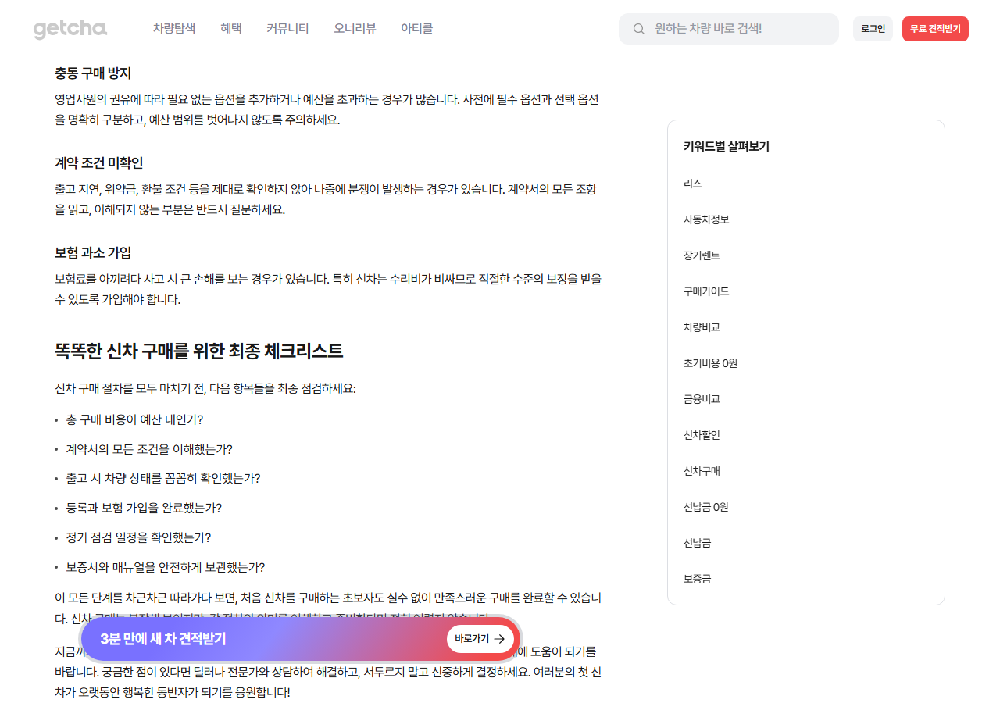
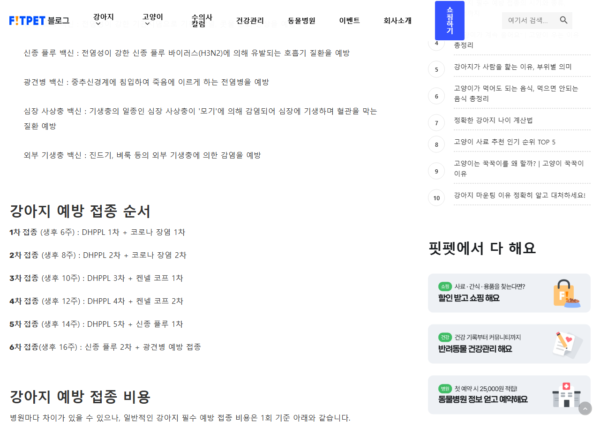

순서형 Map
이사 D-30 체크리스트
이사일을 기준으로 준비 시점을 놓치지 않고, 같은 시점의 할 일을 함께 끝낸다.
Calendar: step_bundle이사에는 날짜 묶음이 필요하지만, 반찬 큐레이션과 취업 영상 컬렉션에 날짜나 필수 순서를 만들면 원문 의미가 바뀝니다.
이사일을 기준으로 준비 시점을 놓치지 않고, 같은 시점의 할 일을 함께 끝낸다.
Calendar: step_bundle
제작자가 고른 다섯 레시피 중 이번 주에 만들 것을 고르고 완료한다.
Calendar: none
서로 독립적인 취업 준비 영상 중 필요한 것을 골라 보고 적용한다.
Calendar: none각 카드에서 SourceRow, 실제 Item, 세 아키텍처, projection 손실을 연속해서 볼 수 있습니다.
이사일을 기준으로 준비 시점을 놓치지 않고, 같은 시점의 할 일을 함께 끝낸다.
외 21개 Item · 전체 데이터는 JSON/fixture에서 확인
포장이사·반포장이사·일반이사 중 방식 선택
이사업체 견적 비교와 예약
입주청소 업체 견적 비교와 예약
새집 현장 점검
27 Item과 SourceRow를 직접 보존합니다. 일정 없는 Item은 Calendar 밖에 남습니다.
27 VEVENT · 0 VTODO. 일정 직렬화는 되지만 완료·계층·출처는 비표준/미보장 metadata에 의존합니다.
7 context를 만들 수 있지만 기존 setup field가 날짜를 이미 한 번만 받습니다.
제작자가 고른 다섯 레시피 중 이번 주에 만들 것을 고르고 완료한다.
오이지무침
초급 · 15분
한치 초무침
초급 · 30분
브로콜리 참깨무침
초급 · 20분
오이고추 된장 무침
초급 · 15분
5 Item과 SourceRow를 직접 보존합니다. 일정 없는 Item은 Calendar 밖에 남습니다.
0 VEVENT · 5 VTODO. 일정 직렬화는 되지만 완료·계층·출처는 비표준/미보장 metadata에 의존합니다.
0 context를 만들 수 있지만 기존 setup field가 날짜를 이미 한 번만 받습니다.
서로 독립적인 취업 준비 영상 중 필요한 것을 골라 보고 적용한다.
자소서 지원동기 6단계
조회 889,279 · 좋아요 17,011 · 댓글 201
산업분석 방법
조회 186,826 · 댓글 139
면접 전 확인할 6가지
조회 103,294 · 댓글 32
3 Item과 SourceRow를 직접 보존합니다. 일정 없는 Item은 Calendar 밖에 남습니다.
0 VEVENT · 3 VTODO. 일정 직렬화는 되지만 완료·계층·출처는 비표준/미보장 metadata에 의존합니다.
0 context를 만들 수 있지만 기존 setup field가 날짜를 이미 한 번만 받습니다.
원문 식단 행을 생후 일수 순서대로 보고 실제 제공 여부를 기록한다.

외 32개 Item · 전체 데이터는 JSON/fixture에서 확인
D+174 식단
한 끼: 쌀미음
D+175 식단
한 끼: 쌀미음
D+176 식단
한 끼: 쌀미음
D+177 식단
한 끼: 쌀·오트밀 미음
36 Item과 SourceRow를 직접 보존합니다. 일정 없는 Item은 Calendar 밖에 남습니다.
36 VEVENT · 0 VTODO. 일정 직렬화는 되지만 완료·계층·출처는 비표준/미보장 metadata에 의존합니다.
1 context를 만들 수 있지만 기존 setup field가 날짜를 이미 한 번만 받습니다.
원문 2주 또는 1달 계획의 회차별 진도를 펼쳐서 관리한다.

외 38개 Item · 전체 데이터는 JSON/fixture에서 확인
1회 모의고사 실전·녹음·보완·복습
영상: https://www.youtube.com/watch?v=MZmrXlAc6k4 · 범위: 15문항 모의고사 · 실제 시험처럼 답변을 녹음하고, 막힌 질문과 고칠 표현을 같은 메모에 적는다.
1회 모의고사 영상
15문항 모의고사
2회 모의고사 실전·녹음·보완·복습
영상: https://www.youtube.com/watch?v=YOZADzoC22s · 범위: 은행·바·카페·MP3·걷기 · 실제 시험처럼 답변을 녹음하고, 막힌 질문과 고칠 표현을 같은 메모에 적는다.
2회 모의고사 영상
은행·바·카페·MP3·걷기
42 Item과 SourceRow를 직접 보존합니다. 일정 없는 Item은 Calendar 밖에 남습니다.
42 VEVENT · 0 VTODO. 일정 직렬화는 되지만 완료·계층·출처는 비표준/미보장 metadata에 의존합니다.
1 context를 만들 수 있지만 기존 setup field가 날짜를 이미 한 번만 받습니다.
신차 구매 과정의 확인·비교·결정 단계를 빠뜨리지 않고 기록한다.

외 10개 Item · 전체 데이터는 JSON/fixture에서 확인
차량 가격 외 취등록세·보험·유지비를 포함한 총예산 확인
현금·할부 시 월 납입 가능액 확인
용도와 탑승 인원에 맞는 차종 선택
트림과 필수 옵션 후보 정리
14 Item과 SourceRow를 직접 보존합니다. 일정 없는 Item은 Calendar 밖에 남습니다.
0 VEVENT · 14 VTODO. 일정 직렬화는 되지만 완료·계층·출처는 비표준/미보장 metadata에 의존합니다.
0 context를 만들 수 있지만 기존 setup field가 날짜를 이미 한 번만 받습니다.
제작자가 정한 7일 영상 순서를 따라가며 오늘 영상 완료 상태를 남긴다.

외 3개 Item · 전체 데이터는 JSON/fixture에서 확인
코어 + 복근 한방에! 20분 복근 운동
영상 길이 21:25 · 확인 조회수 150,000
허리 통증 없이 20분 복근 운동
영상 길이 20:41 · 확인 조회수 78,000
아랫 뱃살 집중 타격 20분 운동
영상 길이 21:01 · 확인 조회수 73,000
서서하는 20분 복근 운동
영상 길이 20:49 · 확인 조회수 88,000
7 Item과 SourceRow를 직접 보존합니다. 일정 없는 Item은 Calendar 밖에 남습니다.
7 VEVENT · 0 VTODO. 일정 직렬화는 되지만 완료·계층·출처는 비표준/미보장 metadata에 의존합니다.
1 context를 만들 수 있지만 기존 setup field가 날짜를 이미 한 번만 받습니다.
카파도키아 출국 전 원문 확인 항목을 날짜 입력 없이 빠르게 점검한다.

외 4개 Item · 전체 데이터는 JSON/fixture에서 확인
여권
여권 유효기간 6개월 이상 확인
항공권 일정
출국·귀국 일정 다시 확인
환전
여행 예산에 맞게 환전
여행자 보험
여행자 보험 준비
8 Item과 SourceRow를 직접 보존합니다. 일정 없는 Item은 Calendar 밖에 남습니다.
0 VEVENT · 8 VTODO. 일정 직렬화는 되지만 완료·계층·출처는 비표준/미보장 metadata에 의존합니다.
0 context를 만들 수 있지만 기존 setup field가 날짜를 이미 한 번만 받습니다.
원문 생후 주차를 참고 일정으로 보고 실제 일정은 담당 수의사와 확인한다.

외 2개 Item · 전체 데이터는 JSON/fixture에서 확인
생후 6주 1차 접종
DHPPL 1차 + 코로나 장염 1차
생후 8주 2차 접종
DHPPL 2차 + 코로나 장염 2차
생후 10주 3차 접종
DHPPL 3차 + 켄넬 코프 1차
생후 12주 4차 접종
DHPPL 4차 + 켄넬 코프 2차
6 Item과 SourceRow를 직접 보존합니다. 일정 없는 Item은 Calendar 밖에 남습니다.
6 VEVENT · 0 VTODO. 일정 직렬화는 되지만 완료·계층·출처는 비표준/미보장 metadata에 의존합니다.
1 context를 만들 수 있지만 기존 setup field가 날짜를 이미 한 번만 받습니다.